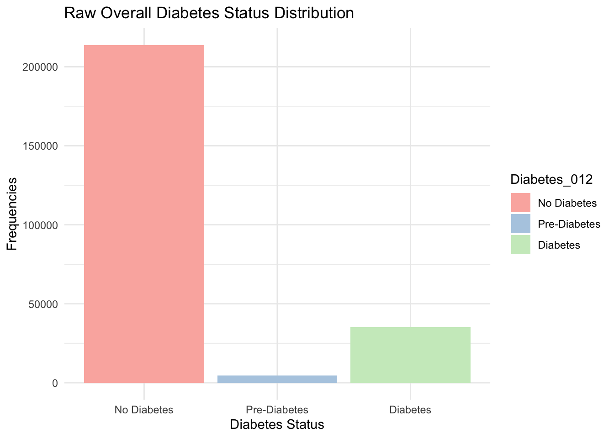

Data cleaning and EDA
Data Description:
The dataset was collected by the Behavioral Risk Factor Surveillance System (BRFSS) in 2015. This original dataset contains responses from 441,455 individuals and has 330 features. For this project, we use the one with 253,680 responses and a three-class diabetes target variable indicating no diabetes, prediabetes, or diabetes. The potential factors for diabetes are biological factors such as sex, blood pressure, cholesterol, BMI, heart disease, social factors such as education and income, and habits of smoking, physical exercise, eating fruit and vegetables.
There are 22 variables in our original dataset.
Diabetes_012: This is a categorical variable indicating the diabetes condition of the individual. 0 is for no diabetes or only during pregnancy, 1 is for prediabetes, and 2 is for diabetes.HighBP: This is a categorical variable indicating whether or not an individual has high blood pressure. (0 = no, 1 = yes)HighChol: This is a categorical variable indicating whether or not an individual has high blood cholesterol. (0 = no, 1 = yes)Cholcheck: This is a categorical variable indicating whether or not an individual has cholesterol check in 5 years. (0 = no, 1 = yes)BMI: It is a continuous variable indicating individual’s Body Mass Index.Smoker: It is a categorical variable showing participants identify themselves whether they have smoked at least 100 cigarettes in their entire life. (0 = no, 1 = yes)Stroke: A categorical variable indicating whether the individual was told they had a stroke. (0 = no, 1 = yes)HeartDiseaseorAttack: A categorical variable showing whether the individual had coronary heart disease (CHD) or myocardial infarction (MI). (0 = no, 1 = yes)PhysActivity: A categorical variable showing whether individual has physical activity in past 30 days which are not included in job. (0 = no, 1 = yes)Fruits: A categorical variable showing whether the individual consumes fruit 1 or more times per day. (0 = no, 1 = yes)Veggies: A categorical variable showing whether the individual consumes vegetables 1 or more times per day. (0 = no, 1 = yes)HvyAlcoholConsump: A categorical variable showing whether the individual is a heavy drinker, which means adult men having more than 14 drinks per week and adult women having more than 7 drinks per week. (0 = no, 1 = yes)AnyHealthcare: A categorical variable showing whether the individual has any kind of health care coverage, including health insurance, prepaid plans such as HMO, etc. (0 = no, 1 = yes)NoDocbcCost: A categorical variable showing whether the individual has a time in the past 12 months when he/she needed to see a doctor but could not because of cost. (0 = no, 1 = yes)GenHlth: A categorical variable showing the self evaluation of the individual’s general health. (1 = excellent, 2 = very good, 3 = good, 4 = fair, 5 = poor)MentHlth: A categorical variable showing the self evaluation of the individual was showing mental health problems including stress, depression, and problems with emotions, for how many days in their past 30 days.PhysHlth: A categorical variable showing the self evaluation of the individual was showing physical health problems, which includes physical illness and injury, for how many days during the past 30.DiffWalk: A categorical variable showing the self evaluation of whether the individual has serious difficulty walking or climbing stairs. (0 = no, 1 = yes)Sex: A categorical variable showing the individual’s born sex. (0 = female, 1 = male)Age: A categorical variable showing the individual’s age. (1 = 18-24 9 = 60-64 13 = 80 or older)Education: A categorical variable showing the individual’s Education level in the scale of 1-6. [1 = Never attended school or only kindergarten, 2 = Grades 1 through 8 (Elementary), 3 = Grades 9 through 11 (Some high school), 4 = Grade 12 or GED (High school graduate), 5 = College 1 year to 3 years (Some college or technical school), 6 = College 4 years or more (College graduate)]Income: A categorical variable showing the individual’s income level in the scale of 1-8. (1 = less than 10,000 dollars, 5 = less than 35,000 dollars, 8 = 75,000 dollars or more)
To explore our question of interest, we will keep
Diabetes_012 as our dependent variable, and investigate the
relationship between the other variables and Diabetes_012.
In our hypothesis, biological factors including blood pressure,
cholesterol level, BMI, Heart Disease, age, and sex might have a
relationship with the levels of diabetes, so we keep variables
HighBP, HighChol, BMI,
HeartDiseaseorAttack, Age, and
Sex.
We also predict that social factors including income, education,
smoking habits, alcohol consumption, physical exercise frequency, and
fruit and vegetable eating will be associated with different diabetes
levels. Therefore, we want to keep Income,
Education, Smoker, PhysActivity,
Fruits, HvyAlcoholConsump, and
Veggies variables.
Read in and Clean Data
First, we read in our data from the csv file.
## Rows: 253680 Columns: 22
## ── Column specification ─────────────────────────────────
## Delimiter: ","
## dbl (22): Diabetes_012, HighBP, HighChol, CholCheck, BMI, Smoker, Stroke, He...
##
## ℹ Use `spec()` to retrieve the full column specification for this data.
## ℹ Specify the column types or set `show_col_types = FALSE` to quiet this message.## # A tibble: 6 × 22
## Diabetes_012 HighBP HighChol CholCheck BMI Smoker Stroke
## <dbl> <dbl> <dbl> <dbl> <dbl> <dbl> <dbl>
## 1 0 1 1 1 40 1 0
## 2 0 0 0 0 25 1 0
## 3 0 1 1 1 28 0 0
## 4 0 1 0 1 27 0 0
## 5 0 1 1 1 24 0 0
## 6 0 1 1 1 25 1 0
## # ℹ 15 more variables: HeartDiseaseorAttack <dbl>, PhysActivity <dbl>,
## # Fruits <dbl>, Veggies <dbl>, HvyAlcoholConsump <dbl>, AnyHealthcare <dbl>,
## # NoDocbcCost <dbl>, GenHlth <dbl>, MentHlth <dbl>, PhysHlth <dbl>,
## # DiffWalk <dbl>, Sex <dbl>, Age <dbl>, Education <dbl>, Income <dbl>diabetes_raw = diabetes_raw0 |>
dplyr::select(Diabetes_012,HighBP,HighChol, BMI, Smoker,
HeartDiseaseorAttack, Sex,Income, Education,
PhysActivity, Fruits, Veggies, Age, HvyAlcoholConsump) |>
mutate(Diabetes_012 = factor(Diabetes_012, levels = c(0, 1, 2), labels = c("No Diabetes", "Pre-Diabetes", "Diabetes")),
HighBP = factor(HighBP, levels = c(0, 1), labels = c("No", "Yes")),
HighChol = factor(HighChol, levels = c(0, 1), labels = c("No", "Yes")),
HeartDiseaseorAttack = factor(HeartDiseaseorAttack, levels = c(0, 1), labels = c("No", "Yes")),
Smoker = factor(Smoker, levels = c(0, 1), labels = c("Nonsmoker", "Smoker")),
Sex = factor(Sex, levels = c(0, 1), labels = c("Female", "Male")),
Fruits = factor(Fruits, levels = c(0, 1), labels = c("No", "Yes")),
Veggies = factor(Veggies, levels = c(0, 1), labels = c("No", "Yes")),
HvyAlcoholConsump = factor(HvyAlcoholConsump, levels = c(0, 1), labels = c("No", "Yes")),
PhysActivity = factor(PhysActivity, levels = c(0, 1), labels = c("No", "Yes")))
diabetes_raw## # A tibble: 253,680 × 14
## Diabetes_012 HighBP HighChol BMI Smoker HeartDiseaseorAttack Sex Income
## <fct> <fct> <fct> <dbl> <fct> <fct> <fct> <dbl>
## 1 No Diabetes Yes Yes 40 Smoker No Fema… 3
## 2 No Diabetes No No 25 Smoker No Fema… 1
## 3 No Diabetes Yes Yes 28 Nonsmok… No Fema… 8
## 4 No Diabetes Yes No 27 Nonsmok… No Fema… 6
## 5 No Diabetes Yes Yes 24 Nonsmok… No Fema… 4
## 6 No Diabetes Yes Yes 25 Smoker No Male 8
## 7 No Diabetes Yes No 30 Smoker No Fema… 7
## 8 No Diabetes Yes Yes 25 Smoker No Fema… 4
## 9 Diabetes Yes Yes 30 Smoker Yes Fema… 1
## 10 No Diabetes No No 24 Nonsmok… No Male 3
## # ℹ 253,670 more rows
## # ℹ 6 more variables: Education <dbl>, PhysActivity <fct>, Fruits <fct>,
## # Veggies <fct>, Age <dbl>, HvyAlcoholConsump <fct>Statistical Summary of Variables
This table presented a statistical summary of the variables in our dataset.
summary(diabetes_raw)## Diabetes_012 HighBP HighChol BMI
## No Diabetes :213703 No :144851 No :146089 Min. :12.00
## Pre-Diabetes: 4631 Yes:108829 Yes:107591 1st Qu.:24.00
## Diabetes : 35346 Median :27.00
## Mean :28.38
## 3rd Qu.:31.00
## Max. :98.00
## Smoker HeartDiseaseorAttack Sex Income
## Nonsmoker:141257 No :229787 Female:141974 Min. :1.000
## Smoker :112423 Yes: 23893 Male :111706 1st Qu.:5.000
## Median :7.000
## Mean :6.054
## 3rd Qu.:8.000
## Max. :8.000
## Education PhysActivity Fruits Veggies Age
## Min. :1.00 No : 61760 No : 92782 No : 47839 Min. : 1.000
## 1st Qu.:4.00 Yes:191920 Yes:160898 Yes:205841 1st Qu.: 6.000
## Median :5.00 Median : 8.000
## Mean :5.05 Mean : 8.032
## 3rd Qu.:6.00 3rd Qu.:10.000
## Max. :6.00 Max. :13.000
## HvyAlcoholConsump
## No :239424
## Yes: 14256
##
##
##
## Exploratory Data Analysis
Bivariate Plots and Analysis Analysis
We first perform univariate analysis for our dependent variable
Diabetes_012 and plot the bivariate relationship between
our interested factors with the diabetes variable respectively.
Distribution of Diabetes Types
Diabetesraw_dist =
ggplot(diabetes_raw, aes(Diabetes_012)) +
geom_bar(aes(fill = Diabetes_012)) +
scale_fill_brewer(palette = 'Pastel1') +
ylab("Frequencies") +
xlab("Diabetes Status") +
ggtitle("Raw Overall Diabetes Status Distribution") +
theme_minimal()
Diabetesraw_dist
From the distribution of Diabetes Status, we can see that the frequency of No Diabetes group is very high with more than 200,000. The Diabetes group has around 30,000 cases, and Pre-Diabetes has less than 10,000 cases. We realize that Pre-Diabetes status has extreme low data samples, so we will exclude this group of data in our future analysis.
diabetes_new =
diabetes_raw |>
filter(Diabetes_012 == 'Diabetes' | Diabetes_012 == 'No Diabetes') |>
rename(Diabetes_status = Diabetes_012)
#diabetes_new
write.csv(diabetes_new, "data/diabetes_new.csv", row.names = FALSE)
diabetes_new1=diabetes_new|>
sample_n(200, replace = FALSE)
write.csv(diabetes_new1, "data/diabetes_new1.csv", row.names = FALSE)1. High Blood Pressure via Diabetes
HighBP_dist =
ggplot(diabetes_new, aes(Diabetes_status, ..count..)) +
geom_bar(aes(fill = HighBP), position = "dodge") +
scale_fill_brewer(palette = 'Pastel1') +
ylab("Frequencies") +
xlab("Diabetes Status") +
ggtitle("HighBP over Diabetes") +
theme_minimal()
HighBP_dist
The graph presents a comparison of the occurrence of high blood pressure in individuals with and without diabetes, showing a higher frequency of individuals without diabetes and without high blood pressure, a moderate frequency of those without diabetes but with high blood pressure, and lower frequencies for both categories among individuals with diabetes. From the graph, we can see that the high blood pressure is more prevalent in diabetes group than in no diabetes group.
2. High Cholesterol Level via Diabetes
HighChol_dist =
ggplot(diabetes_new, aes(Diabetes_status, ..count..)) +
geom_bar(aes(fill = HighChol), position = "dodge") +
scale_fill_brewer(palette = 'Pastel1') +
ylab("Frequencies") +
xlab("Diabetes Status") +
ggtitle("HighChol over Diabetes") +
theme_minimal()
HighChol_dist
From the graph, we can see that the high blood pressure is more prevalent in Diabetes group than in No Diabetes group.
3. BMI via Diabetes
BMI_dist =
ggplot(diabetes_new, aes(BMI, ..count..)) +
geom_bar(aes(fill = Diabetes_status)) +
scale_fill_brewer(palette = 'Pastel1') +
ylab("Frequencies") +
xlab("BMI") +
ggtitle("BMI Distribution") +
theme_minimal()
BMI_dist
For both diabetes and no diabetes group, the BMI of the population are approximately normal with a slight right tail. The BMI distribution for the diabetes group extends further to the right, indicating a presence of higher BMI values in this group compared to those without diabetes.
4. Heart Disease or Attack via Diabetes
Heartdisease_dist =
ggplot(diabetes_new, aes(Diabetes_status, ..count..)) +
geom_bar(aes(fill = HeartDiseaseorAttack), position = "dodge") +
scale_fill_brewer(palette = 'Pastel1') +
ylab("Frequencies") +
xlab("Diabetes Status") +
ggtitle("Heart Disease over Diabetes") +
theme_minimal()
Heartdisease_dist
From the graph, heart disease is in a larger proportion in the Diabetes group than in the No Diabetes group.
5. Age via Diabetes
Age_dist =
ggplot(diabetes_new, aes(Age, ..count..)) +
geom_bar(aes(fill = Diabetes_status)) +
scale_fill_brewer(palette = 'Pastel1') +
ylab("Frequencies") +
xlab("Age") +
ggtitle("Age Distribution") +
theme_minimal()
Age_dist
We can see that for both Diabetes and No Diabetes groups, more people are in their age of group 9 or group 10, which indicates they are between 60-70 years old. In younger age groups, there are less population in our dataset.
6. Sex via Diabetes
Sex_dist =
ggplot(diabetes_new, aes(Diabetes_status, ..count..)) +
geom_bar(aes(fill = Sex), , position = "dodge") +
scale_fill_brewer(palette = 'Pastel1') +
ylab("Frequencies") +
xlab("Diabetes") +
ggtitle("Sex over Diabetes Status") +
theme_minimal()
Sex_dist
There are approximately same number of females and males in Diabetes group, and there are more females than males in the No Diabetes group.
7. Income via Diabetes
Income_dist =
ggplot(diabetes_new, aes(Income, ..count..)) +
geom_bar(aes(fill = Diabetes_status)) +
scale_fill_brewer(palette = 'Pastel1') +
ylab("Frequencies") +
xlab("Income") +
ggtitle("Income Distribution") +
theme_minimal()
Income_dist For Diabetes group, the income distribution was relatively flat from 1
to 8. For No Diabetes group, the income distribution is highly skewed
with the highest frequency in the highest income level.
For Diabetes group, the income distribution was relatively flat from 1
to 8. For No Diabetes group, the income distribution is highly skewed
with the highest frequency in the highest income level.
8. Education via Diabetes
Education_dist =
ggplot(diabetes_new, aes(Education, ..count..)) +
geom_bar(aes(fill = Diabetes_status)) +
scale_fill_brewer(palette = 'Pastel1') +
ylab("Frequencies") +
xlab("Education") +
ggtitle("Education Distribution") +
theme_minimal()
Education_dist In the No Diabetes group, the education is highly skewed with more
frequency in high education levels, while in Diabetes group, the
frequency of education level remains the same from 4 to 6. This means
that they are in High school graduate, College 1 year to 3 years, and
College 4 years or more education levels.
In the No Diabetes group, the education is highly skewed with more
frequency in high education levels, while in Diabetes group, the
frequency of education level remains the same from 4 to 6. This means
that they are in High school graduate, College 1 year to 3 years, and
College 4 years or more education levels.
9. Fruits via Diabetes
Fruits_dist =
ggplot(diabetes_new, aes(Diabetes_status, ..count..)) +
geom_bar(aes(fill = Fruits), , position = "dodge") +
scale_fill_brewer(palette = 'Pastel1') +
ylab("Frequencies") +
xlab("Diabetes") +
ggtitle("Fruits over Diabetes") +
theme_minimal()
Fruits_dist
There is a higher proportion of fruit eating in the No Diabetes group than the Diabetes group.
10. Veggies via Diabetes
Veggies_dist =
ggplot(diabetes_new, aes(Diabetes_status, ..count..)) +
geom_bar(aes(fill = Veggies), , position = "dodge") +
scale_fill_brewer(palette = 'Pastel1') +
ylab("Frequencies") +
xlab("Diabetes") +
ggtitle("Vegetables over Diabetes") +
theme_minimal()
Veggies_dist
For both Diabetes and No Diabetes groups, more people tend to eat veggies.
11. Smoker via Diabetes
Smoker_dist =
ggplot(diabetes_new, aes(Diabetes_status, ..count..)) +
geom_bar(aes(fill = Smoker), , position = "dodge") +
scale_fill_brewer(palette = 'Pastel1') +
ylab("Frequencies") +
xlab("Diabetes") +
ggtitle("Smokers over Diabetes") +
theme_minimal()
Smoker_dist
More people are smokers than nonsmokers in the Diabetes group, while more people are smokers than nonsmokers in the No Diabetes group.
12. PhysActivity via Diabetes
Physactivity_dist =
ggplot(diabetes_new, aes(Diabetes_status, ..count..)) +
geom_bar(aes(fill = PhysActivity), , position = "dodge") +
scale_fill_brewer(palette = 'Pastel1') +
ylab("Frequencies") +
xlab("Diabetes") +
ggtitle("PhysActivity over Diabetes") +
theme_minimal()
Physactivity_dist Higher proportion of people have physical activities in the No Diabetes
group comparing to the Diabetes group.
Higher proportion of people have physical activities in the No Diabetes
group comparing to the Diabetes group.
13. HvyAlcoholConsump via Diabetes
HvyAlcohol_dist =
ggplot(diabetes_new, aes(Diabetes_status, ..count..)) +
geom_bar(aes(fill = HvyAlcoholConsump), , position = "dodge") +
scale_fill_brewer(palette = 'Pastel1') +
ylab("Frequencies") +
xlab("Diabetes") +
ggtitle("Alcohol over Diabetes") +
theme_minimal()
HvyAlcohol_dist
According to the bar chart distribution, we decide to drop Heavyalcoholconsumption, heart disease attack these two variables due to following reasons.
For the heavy alcohol consumption, the samples drinking alcohol in large amount is overall too few in the sample, so the variable more not be fully accutately captured. Therefore, if we test on this variable, it may be not representitive and significant.
For the heart disease attack, it is the same reason that sample size with heart disease attack is too small, so it may not be representitive and meaningful to test on.
We will also drop age and education these two variables due to following reasons.
For the age, the measure and categorize method is not suitable for our statistical test, since it is a categorical variable showing the individual’s age. (1 = 18-24 9 = 60-64 13 = 80 or older), and each number does not represent the true age of the samples, so we cannot do a precise test on it.
For the education, it is the same reason that it is a categorical variable showing the individual’s Education level in the scale of 1-6. [1 = Never attended school or only kindergarten, 2 = Grades 1 through 8 (Elementary), 3 = Grades 9 through 11 (Some high school), 4 = Grade 12 or GED (High school graduate), 5 = College 1 year to 3 years (Some college or technical school), 6 = College 4 years or more (College graduate)].
Therefore, now we come to close with 9 variables that are potential estimates in our model. They are: 1. High Blood Pressure. 2. High Cholesterol Level. 3. BMI. 4. Sex. 5. Fruits Consumption. 6. Veggies Consumption. 7. Smoking. 8. Income Level. 9. Physical Acitivity.
Plots all together
plotsall = plot_grid(
HighBP_dist + theme(legend.position="none"),
HighChol_dist + theme(legend.position="none"),
Fruits_dist + theme(legend.position="none"),
Veggies_dist + theme(legend.position="none"),
BMI_dist + theme(legend.position="none"),
Sex_dist + theme(legend.position="none"),
Income_dist + theme(legend.position="none"),
Physactivity_dist + theme(legend.position="none"),
Smoker_dist + theme(legend.position="none")) +
theme(axis.text.x = element_text(size = 4))
plotsall We now can see all the 9 variables distributions from our plot
together.
We now can see all the 9 variables distributions from our plot
together.
Plots for further investigation: After we investigate all the 9 variables distribution, we are now ready to investigate further in specific variables that we are interested in.
- Firstly, we decide to make one box plot for the numeric values variables like BMI.
- Then since veggies and fruits consumptions are two variables close related, we also need to generate a plot for these 2 variable interelationship.
- To further visualize the variable stats, we also build a R table to investigate each factor’s significance.
- Finally, we also make a small heat map to show the correlation between each variable to make sure that we are including only the variables with little correlation to each other to inhibit the collinearity problem.
1. Box plot distribution of BMI in different Diabetes status
diabetes_bmi =
diabetes_new |>
filter(Diabetes_status == "Diabetes" | Diabetes_status == "No Diabetes")
plotBMI =
ggplot(diabetes_bmi, aes(x = BMI, y = Diabetes_status, fill = Diabetes_status))+
geom_boxplot(alpha = 0.5) +
theme(legend.position = 'none') +
scale_fill_brewer(palette = 'Pastel1') +
ylab("Diabetes Status") +
xlab("BMI Value") +
ggtitle("Box Plot Distribution of BMI over Diabetes Status") +
theme_minimal()
plotBMI From the box plot for BMI value, we can see that Diabetes group BMI has
a higher median which is around 30 than the median in non diabetes group
of which is around 27. The No diabetes group also has a left shifted
distribution than the diabetes group meaning that generally Diabetes
group has a higher BMI value distribution than the non diabetes
group.
From the box plot for BMI value, we can see that Diabetes group BMI has
a higher median which is around 30 than the median in non diabetes group
of which is around 27. The No diabetes group also has a left shifted
distribution than the diabetes group meaning that generally Diabetes
group has a higher BMI value distribution than the non diabetes
group.
2. Mosaic plot to see distribution of Fruits and Veggies
Mosaicplot =
mosaicplot(Fruits ~ Veggies, data=diabetes_new,
labeling = labeling_cells(text = round(x, 2)),
legend = TRUE,
main = "Fruits and Veggies Consumption Mosaic Map",
xlab = "Veggies Consumption",
ylab = "Fruits Consumption",
las = 0.5, color = brewer.pal(2, name = "Pastel1")) 
Mosaicplot## NULLOur mosaic map shows that through the whole sample, a large amount of people have a good habit of consuming both fruits and veggies, and only a small number of people consume veggies without fruits and quite a few people only consume fruits. There are also a small number of people who do not consume fruits and veggies.
Test for P-value function
pvalue <- function(x, ...) {
# Construct vectors of data y, and groups (strata) g
y <- unlist(x)
g <- factor(rep(1:length(x), times=sapply(x, length)))
if (is.numeric(y)) {
# For numeric variables, perform a one-side anova test
p <- aov(y ~ g)$p.value
} else {
# For categorical variables, perform a chi-squared test of independence
p <- chisq.test(table(y, g))$p.value
}
# Format the p-value, using an HTML entity for the less-than sign.
# The initial empty string places the output on the line below the variable label.
c("", sub("<", "<", format.pval(p, digits=3, eps=0.001)))
}3. R table 1 for 9 variables with P-value attached
## Rtable_1 shows the demographics stats
Rtable_1 =
table1(~ factor(Sex) + factor(HighBP) + factor(HighChol) + BMI + factor(Smoker) + factor(Income) + factor(PhysActivity) + factor(Fruits) + factor(Veggies) | Diabetes_status, data=diabetes_new, overall=F, extra.col=list(`P-value`=pvalue))
Rtable_1| No Diabetes (N=213703) |
Diabetes (N=35346) |
P-value | |
|---|---|---|---|
| factor(Sex) | |||
| Female | 120959 (56.6%) | 18411 (52.1%) | <0.001 |
| Male | 92744 (43.4%) | 16935 (47.9%) | |
| factor(HighBP) | |||
| No | 134391 (62.9%) | 8742 (24.7%) | <0.001 |
| Yes | 79312 (37.1%) | 26604 (75.3%) | |
| factor(HighChol) | |||
| No | 132673 (62.1%) | 11660 (33.0%) | <0.001 |
| Yes | 81030 (37.9%) | 23686 (67.0%) | |
| BMI | |||
| Mean (SD) | 27.7 (6.26) | 31.9 (7.36) | |
| Median [Min, Max] | 27.0 [12.0, 98.0] | 31.0 [13.0, 98.0] | |
| factor(Smoker) | |||
| Nonsmoker | 121879 (57.0%) | 17029 (48.2%) | <0.001 |
| Smoker | 91824 (43.0%) | 18317 (51.8%) | |
| factor(Income) | |||
| 1 | 7114 (3.3%) | 2383 (6.7%) | <0.001 |
| 2 | 8341 (3.9%) | 3086 (8.7%) | |
| 3 | 12005 (5.6%) | 3568 (10.1%) | |
| 4 | 15622 (7.3%) | 4054 (11.5%) | |
| 5 | 20792 (9.7%) | 4504 (12.7%) | |
| 6 | 30431 (14.2%) | 5291 (15.0%) | |
| 7 | 37219 (17.4%) | 5265 (14.9%) | |
| 8 | 82179 (38.5%) | 7195 (20.4%) | |
| factor(PhysActivity) | |||
| No | 47212 (22.1%) | 13059 (36.9%) | <0.001 |
| Yes | 166491 (77.9%) | 22287 (63.1%) | |
| factor(Fruits) | |||
| No | 76287 (35.7%) | 14653 (41.5%) | <0.001 |
| Yes | 137416 (64.3%) | 20693 (58.5%) | |
| factor(Veggies) | |||
| No | 38159 (17.9%) | 8610 (24.4%) | <0.001 |
| Yes | 175544 (82.1%) | 26736 (75.6%) |
From the R table 1, we can see that all the categorical variables have p-values smaller than 0.001 which means that the variables are good to test and may be significant in our further analysis, so we can include them all in. From the table, we can clearly see that both proportions of high cholesterol and high blood pressure are higher in diabetes than in no diabetes. Male proportions in diabetes are higher than females. Diabetes group BMI has a mean of 31.9 which is much higher than the mean in non diabetes group of 27.7. There are higher proportions of smokers in the diabetes group than in the non diabetic group. The no diabetes group has higher proportions of high level incomes than the no diabetes group. Diabetes group also generate a lower proportion of physical activity than the non diabetes group. Diabetes group also has a lower proportion of people consuming fruits (58.5% ) and veggies (75.6%) than the non-diabetes group (fruits:64.3% veggies:82.1%).
4. Heat map to see correlation between each variables.
options(repr.plot.width=30, repr.plot.height=40)
heatmapplot =
heatmaply(cor(diabetes_raw0),
col = brewer.pal(8, name = "PiYG"),
main = "Correlation Heatmap",
margins = c(100, 100),
notecol = "Black",
symmetric = TRUE)
heatmapplotThe correlation heatmap presents a visual representation of the strength and direction of the relationships between various health, lifestyle, and socioeconomic variables in relation to diabetes. The color spectrum from pink to green indicates the range of correlation coefficients, with pinker shades representing weaker correlations and greener shades indicating stronger ones. Notably, variables such as High Blood Pressure (HighBP), High Cholesterol (HighChol), and Body Mass Index (BMI) show brighter hues along the diagonal, suggesting a stronger positive correlation with the diabetes outcome (Diabetes_012). This implies that higher values of these factors are associated with a greater likelihood of diabetes. In contrast, variables like vegetable consumption (Veggies) exhibit a dark shade when correlated with High Cholesterol (HighChol), indicating a weak, potentially negative relationship.